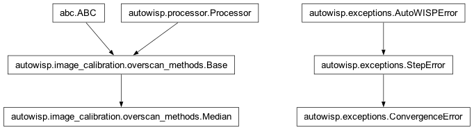
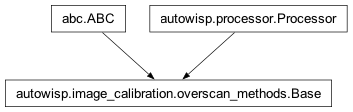
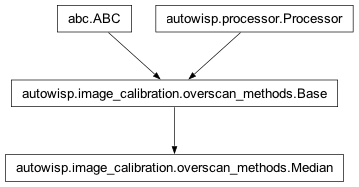

autowisp.image_calibration.overscan_methods module
Class Inheritance Diagram

A collection of overscan correction methods (see Calibrator class docs).
- class autowisp.image_calibration.overscan_methods.Base(**configuration)[source]
-

The minimal intefrace that must be provided by overscan methods.
- abstract __call__(*, raw_fname, raw_hdu, overscans, image_area, gain, split_channels=None)[source]
Return the overscan correction and its variance for the given image.
- Parameters:
raw_fname – The raw image(s) for which to find the overscan correction. Should be dictionary of filenames if processing multi-channel dataset that is split in different files.
raw_hdu – The HDU to read from the raw file. Int or dict indexed by channel name.
overscans – A list of the areas on the image to use when determining the overscan correction. Each area is specified as
dict(xmin = <int>, xmax = <int>, ymin = <int>, ymax = <int>)For multi-channel data the coordinates are for the un-split image.image_area – The area in raw_image for which to calculate the overscan correction. The format is the same as a single overscan area.
gain – The value of the gain to assume for the raw image (electrons/ADU).
split_channels – See
Calibrator.
- Returns:
Dictionary with items:
- correction: A 2-D numpy array with the same resolution
as the image_area giving the correction to subtract from each pixel.
- variance: An estimate of the variance in the
overscan_correction entries (in ADU).
- Return type:
- class autowisp.image_calibration.overscan_methods.Median(reject_threshold=5.0, max_reject_iterations=10, min_pixels=100, require_convergence=False)[source]
Bases:
Base
Correction is median of all overscan pixels with iterative outlier reject.
The correction is computed as the median of all overscan pixels. After that, pixels that are too far from the median are excluded and the process starts from the beginning until no pixels are rejected or the maximum number of rejection iterations is reached.
Public attributes exactly match the
__init__()arguments.- __init__(reject_threshold=5.0, max_reject_iterations=10, min_pixels=100, require_convergence=False)[source]
Create a median ovescan correction method.
- Parameters:
reject_threshold – Pixels that differ by more than reject_threshold standard deviations from the median are rejected at each iteration.
max_reject_iterations – The maximum number of outlier rejection iterations to perform. If this limit is reached, either the latest result is accepted, or an exception is raised depending on require_convergence.
require_convergence – If this is False and the maximum number of rejection iterations is reached, the last median computed is the accepted result. If this is True, hitting the max_reject_iterations limit throws an exception.
min_pixels – If iterative rejection drives the number of acceptable pixels below this value an exception is raised.
- Returns:
None
Notes
Initializes the following private attributes to None, which indicate the state of the last overscan correction calculation:
- _last_num_reject_iter: The number of rejection iterations
used by the last overscan correction calculation.
- _last_num_pixels: The number of unrejected pixels the last
overscan correction was based on.
_last_converged: Did the last overscan calculation converge?
- document_in_fits_header(header)[source]
Document the last calculated overscan correction to header.
Notes
Adds the following keywords to the header:
OVSCNMTD = Iterative rejection median / Overscan correction method OVSCREJM = ### / Maximum number of allowed overscan rejection iterations. OVSCMINP = ### / Minimum number of pixels to base correction on OVSCREJI = ### / Number of overscan rejection iterations applied OVSCNPIX = ### / Actual number of pixels used to calc overscan OVSCCONV = T/F / Did the last overscan correction converge
- Parameters:
header – The FITS header to add the keywords to.
- Returns:
None